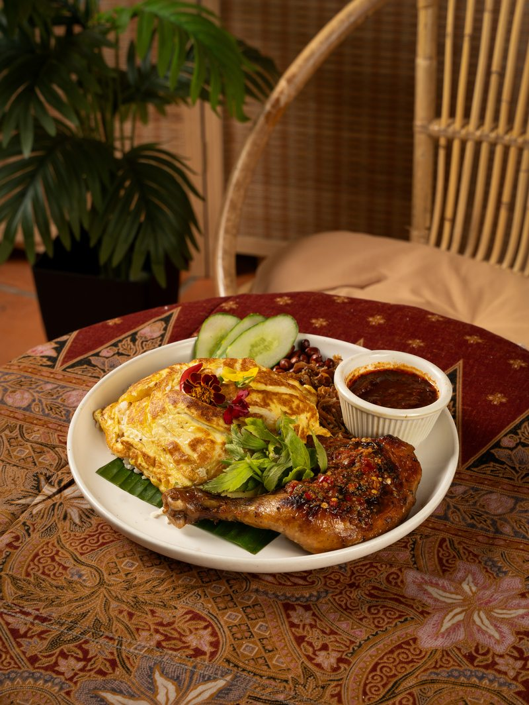
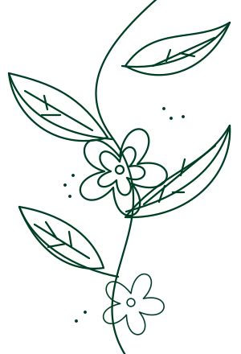
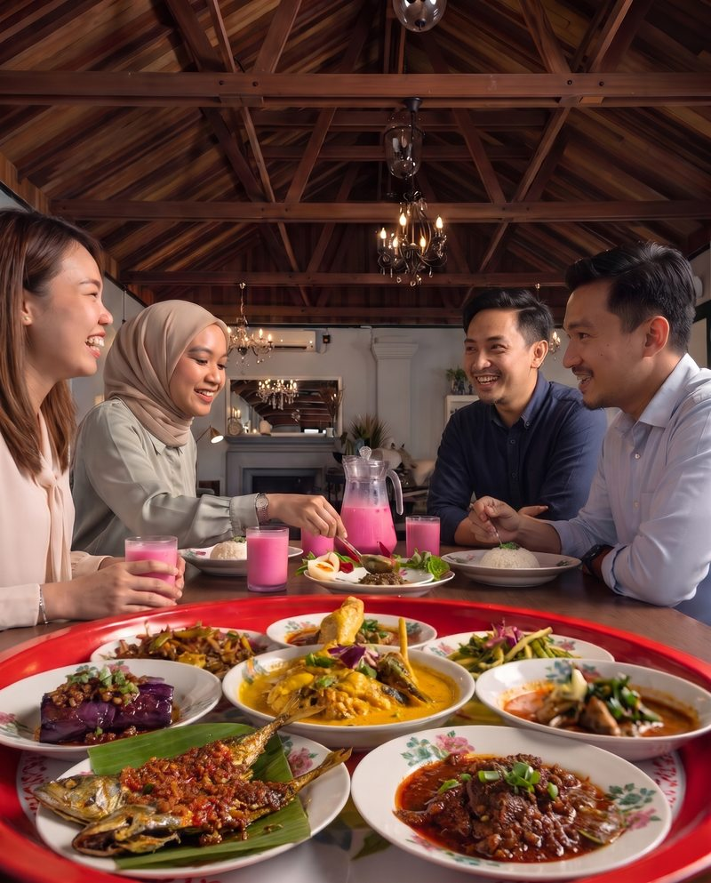
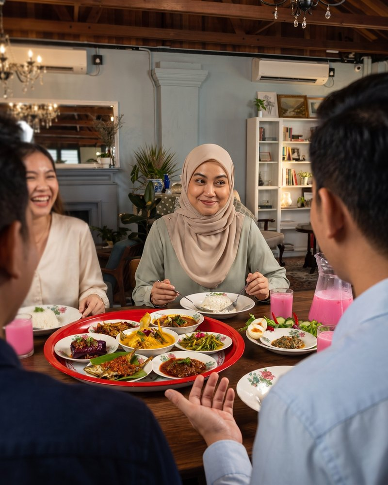
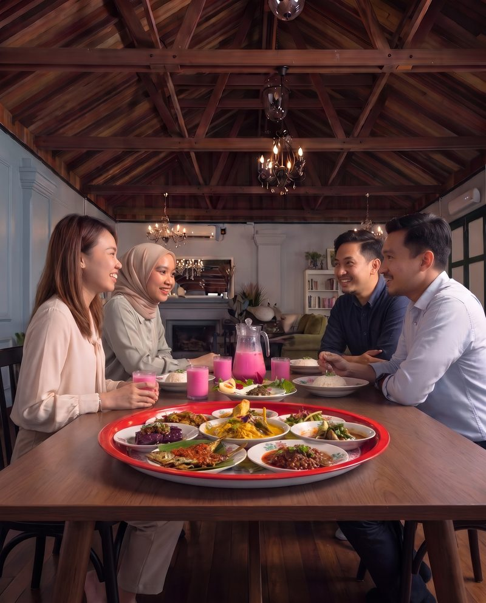
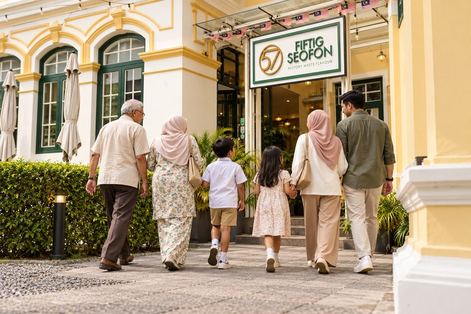
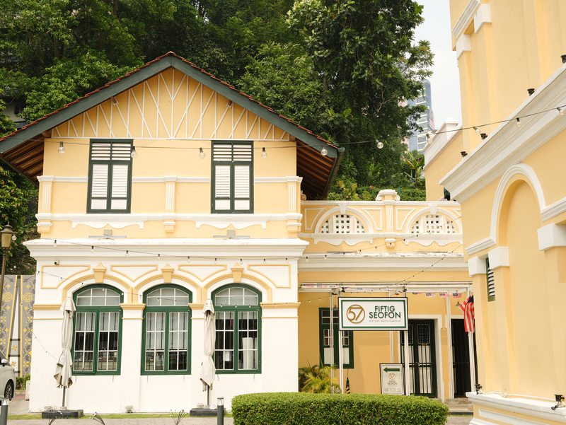
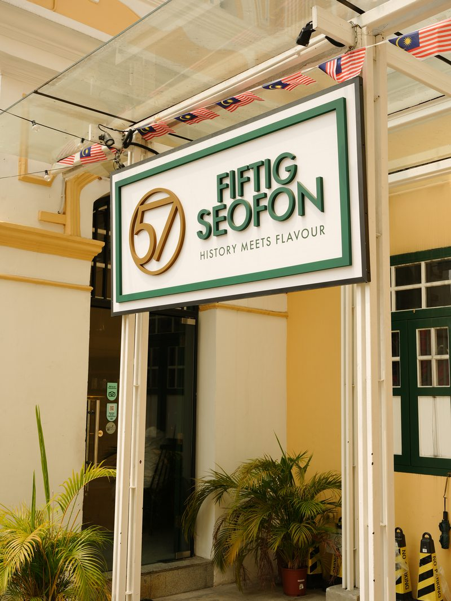

Nasi lemak
Nasi lemak dengan telur dan ayam sambal. Satu pinggan untuk selera sendiri.

Hidangan Melayu, Set Dulang untuk dikongsi, dan ruang untuk makan bersama di tengah KL.
Lihat menu
Di Fiftig Seofon, hidangan Melayu menjadi sebab untuk duduk semeja. Kongsi lauk, tambah nasi dan sambung cerita dalam suasana Rumah Tangsi.


Anda juga yang selalu kena pilih tempat lunch? Ajak team kongsi Set Dulang di Fiftig. Parking percuma, jadi satu perkara dah selesai.
Book slot untuk office
Pilih lauk untuk dikongsi, duduk semeja dan luangkan masa untuk cerita masing-masing. Hidangan Melayu dan suasana rumah warisan jadi teman pertemuan.
Book slot untuk keluargaSetiap Set Dulang, percuma satu jug Bandung.
Parking percuma.
Nak matcha? Pilih salah satu daripada lima matcha pada RM5 dengan pembelian makanan.
Harga matcha tertakluk pada caj perkhidmatan 10%. Pilihan dan syarat dalam menu penuh.

Rumah Tangsi, yang dulu dikenali sebagai Loke Hall, menyimpan kisah Kuala Lumpur sejak awal 1900-an. Bangunan yang dikaitkan dengan ahli perniagaan Loke Chow Kit ini melalui kerja pemuliharaan yang siap pada 2017. Fasad kuning, tingkap hijau dan perincian bangunan warisan ini menjadi latar untuk anda menikmati hidangan Melayu di Fiftig Seofon hari ini.
Baca kisah Rumah Tangsi (Warisan KL)
Pesanan makanan terakhir: 5.30 petang (Selasa–Khamis), 9.30 malam (Jumaat–Ahad).
Parking percuma. Hubungi kami untuk panduan parking sebelum datang.
Buka Google MapsBeritahu tarikh, masa dan jumlah orang. Team kami akan semak slot yang tersedia dan bantu uruskan booking anda.
Book slot di WhatsAppBooking disahkan oleh team kami melalui WhatsApp.